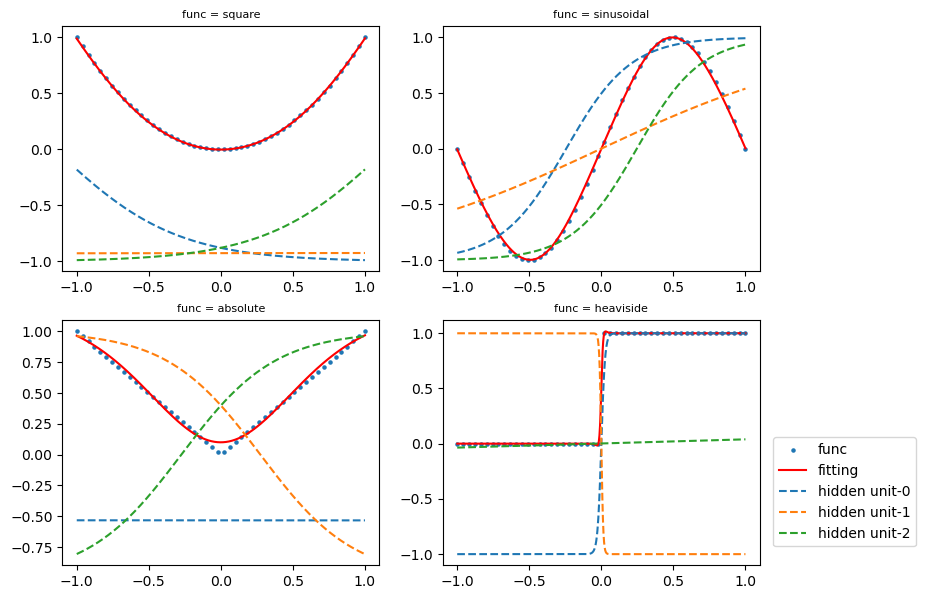
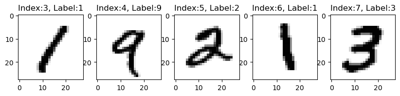
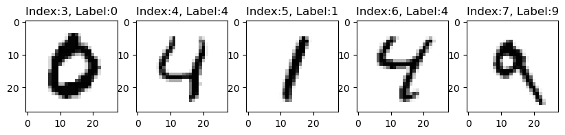
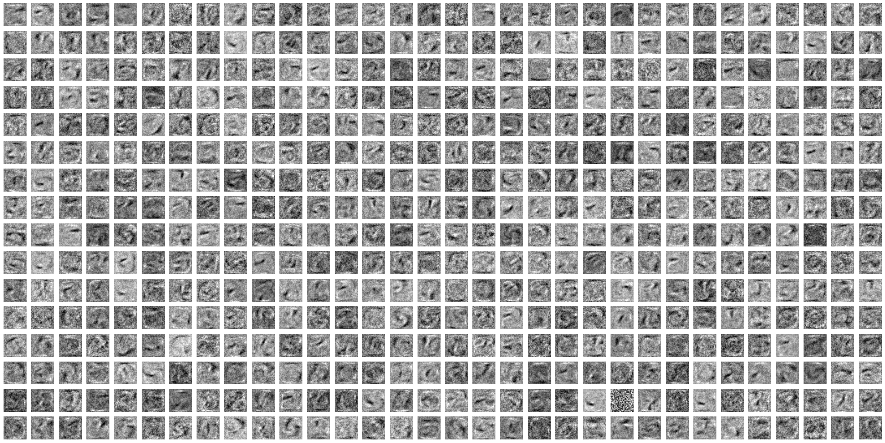
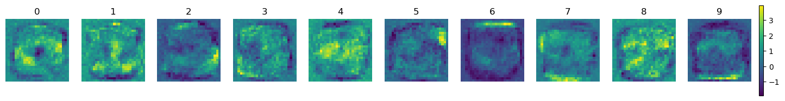
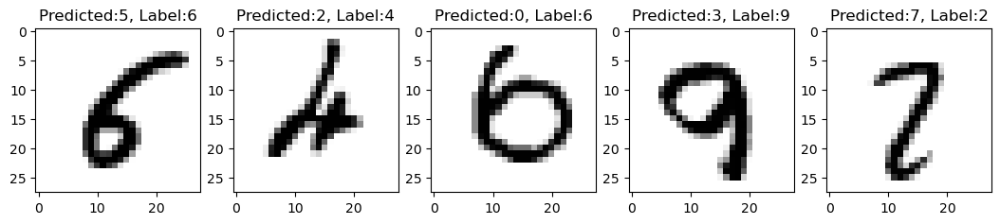

Neural Networks
Neural Networks
Artificial intelligence (AI) has been a subject of intense media hype. Machine learning, deep learning, and AI come up in countless articles, often outside of technology-minded publications.
Artificial intelligence was born in the 1950s, when computer scientists began exploring the possibility of making computers “think.” AI is defined as the effort to automate tasks performed by humans. The field encompasses machine learning and deep learning, but also includes approaches that don’t involve any learning. Symbolic AI, which involves programmers handcrafting a set of rules to manipulate knowledge, was the dominant paradigm in AI until the late 1980s. However, it proved intractable for solving complex problems, leading to the rise of machine learning as a new approach.
The concept of machine learning is a programming paradigm that allows computers to learn on their own how to perform a task by looking at data, instead of relying on human-crafted rules. \begin{align} \left. \begin{aligned} \text{Rules} \longrightarrow \\ \text{Data} \longrightarrow \end{aligned} \right| &\text{Classical programming} \longrightarrow \text{Answer} \\ \\ \left. \begin{aligned} \text{Data} \longrightarrow \\ \text{Answer} \longrightarrow \end{aligned} \right| &\text{Machine learning} \longrightarrow \text{Rules} \end{align}
Unlike classical programming, where humans input rules and data, and out come answers, machine learning systems are trained by presenting them with many examples relevant to a task, allowing them to find statistical structure in the data and eventually come up with rules for automating the task. Machine learning has become the most popular and successful subfield of AI, driven by faster hardware and larger datasets.
Deep learning is a subfield of machine learning that involves learning successive layers of increasingly meaningful representations from data. It often involves lots of (tens or hundreds) of layers of representations learned automatically from training data via models called neural networks. The deep in deep learning isn’t a reference to any kind of deeper understanding achieved by the approach; rather, it stands for this idea of successive layers of representations.
Deep learning is a complex field that requires familiarity with some concepts. Our approach is to build your intuition about these concepts without getting bogged down in overly technical details. This will help you understand the fundamental ideas behind deep learning and how they can be applied to real-world problems.
Tensor: where it starts
Tensors are fundamental to the data representations for neural networks. Another name for the same concept is multidimensional array. The dimensionality of a tensor coincides with the number of indexes used to refer to scalar values within the tensor.

- Scalars: 0 dimensional tensors
- Vectors: 1 dimensional tensors
- Matrix: 2 dimensional tensors
Let’s make data tensors more concrete with real-world examples:
- Vector data — 2D tensors of shape (samples, features)
- Timeseries data or sequence data — 3D tensors of shape (samples, timesteps, features)
- Images — 4D tensors of shape (samples, height, width, channels) or (samples, channels, height, width)
- Video — 5D tensors of shape (samples, frames, height, width, channels) or (samples, frames, channels, height, width)
Layers: the building blocks of deep learning
A layer in a neural network is a collection of nodes or neurons responsible for learning specific features from input data. Each layer takes one or more input tensors and outputs one or more output tensors, forming a hierarchical structure of learned features.

A crucial aspect of each layer is its set of weights (w_i in the simplified representation), which are learned during training and determine the contribution of each input feature to the output. These weights control how much each input feature affects the layer’s output and are adjusted during training to improve the model’s performance. In summary, a neural network layer is a data-processing module that learns meaningful representations of the input data, which are used to make predictions or classifications.
An example of a simple neural network with one input node, two hidden nodes, and one output node can be seen in the included Excel file.

By varying the input value, the output value exhibits a non-linearity.
Activation functions: beyond the linearity
As we have seen, the simplest unit in (deep) neural networks is a linear operation (scaling + offset) followed by an activation function.

where the linear operation is often performed as matrix multiplication.
Activation functions sound complicated, but the most common activation function these days is ReLU, or rectified linear unit. Which again sounds complicated! But all it turns out to be is a function that implements max(0,x), so the result is 0 if the input is negative, or just the input (x) if x is positive. The graphs illustrate the shape of some commonly used activation functions and how they transform input values to output values.

Another very important activation function softmax, which is a little more complicated mathematically. Basically it produces a set of values between 0 and 1 that adds up to 1 (probabilities!) and weights the values so it exaggerates differences—that is, it produces one result in a vector higher than everything else. It is often used at the end of a classification network to ensure that that network makes a definite prediction about what class it thinks the input belongs to.
Without activation functions, neural network falls back to being a linear model. Since the layers of linear operations is still a linear operation, the absence of activation functions makes the network unable to learn nonlinear relationships between inputs and outputs. The following are true for the activation functions:
- They have at least one sensitive range, where nontrivial changes to the input result in a corresponding nontrivial change to the output. This is needed for training.
- Many of them have an insensitive (or saturated) range, where changes to the input result in little or no change to the output.
Loss function and optimizer: less is what we want
A loss function (or cost function) is a function that computes a single numerical value that the learning process will attempt to minimize. The calculation of loss typically involves taking the difference between the desired outputs (labels) for some training samples and the outputs actually produced by the model when fed those samples.
The optimizer determines how the network will be updated based on the loss function. It implements a specific variant of stochastic gradient descent (SGD).
Models: networks of layers
A deep learning model is typically composed of multiple layers of interconnected nodes or neurons. In a feedforward neural network (FNN), information flows through the layers in one direction only, with no feedback connections between nodes. This makes FNNs suitable for many classification and regression tasks.
In contrast, a recurrent neural network (RNN) has connections between nodes that can form cycles, allowing the network to retain information and have “memories” of previous inputs. This makes RNNs well-suited for processing sequential data, such as text, speech, and time series data. By maintaining a memory of previous inputs, RNNs can capture long-term dependencies and make predictions based on context.
Overall, the architecture of a deep learning model, whether FNN or RNN, is an important factor in determining its suitability for a particular task.
Anatomy of a neural network
We consider a simple neural network with 3 hidden layers. It learns from scatter input points of a set of functions, such as x^2, \sin(x), \text{abs}(x) and \text{heaviside}(x), and outputs the predicted functions.

Figure 1 displays the features captured by the hidden layers. In other words, the neural network believes that the final curve is a weighted sum of three curves produced by the hidden layers.
A Simple Example
The MNIST dataset is a popular benchmark dataset for image classification tasks. It consists of 60,000 training images and 10,000 test images of handwritten digits from 0 to 9. Each image is grayscale and has a resolution of 28 \times 28 pixels.
Code
import matplotlib.pyplot as plt
from keras.datasets import mnist
(train_images, train_labels), (test_images, test_labels) = mnist.load_data()
print('training images:{}, test images:{}'.format(train_images.shape, test_images.shape))
def showimg(data):
idx = 3
span = 5
if data=='train':
images = train_images
labels = train_labels
if data=='test':
images = test_images
labels = test_labels
plt.figure(figsize=(10,2))
for i in range(5):
plt.subplot(1, 5, i + 1)
digit = images[idx+i]
plt.imshow(digit, cmap=plt.cm.binary)
plt.title('Index:{}, Label:{}'.format(idx+i, labels[idx+i]), fontsize = 12)
plt.show()
showimg('train')
showimg('test')training images:(60000, 28, 28), test images:(10000, 28, 28)

We’re using Keras to classify images into their 10 categories (0 through 9).
Data Preparation
Before training, we reshape and scale the image data, and categorically encode the labels

which is executed in python code as follows
train_images_reshape = train_images.reshape((60000, 28 * 28))
train_images_reshape = train_images_reshape.astype('float32') / 255
test_images_reshape = test_images.reshape((10000, 28 * 28))
test_images_reshape = test_images_reshape.astype('float32') / 255
train_labels_cat = to_categorical(train_labels)
test_labels_cat = to_categorical(test_labels)Network Architecture
The core building block of neural networks is the layer, a data-processing module working as a filter for data. Specifically, layers extract representations out of the data fed into them in a more useful form which is often called features.
Most of deep learning consists of chaining together simple layers that will implement a form of progressive data distillation. A deep-learning model is like a sieve for data processing, made of a succession of increasingly refined data filters the layers.
network = models.Sequential()
network.add(layers.Dense(512, activation='relu', input_shape=(28 * 28,)))
network.add(layers.Dense(10, activation='softmax'))Here, our network consists of a sequence of two densely connected (fully connected) layers.

The weights of the first layer can be viewed as 512 28x28 filter images. The first layer compares the input images with these 512 filter images and generates 512 filter scores as output.
The second (and last) layer is a 10-way softmax layer. It aggregates the 512 filter scores into 10 probability scores using the softmax activation function. Each score represents the probability that the current digit image belongs to one of the 10 digit classes.
Compilation
Before training the network, we need to perform a compilation step by setting up:
- An optimizer: the mechanism to improve its performance on the training data
- A loss function: the measurement of its performance on the training data
- Metrics to monitor during training and testing
network.compile(optimizer='rmsprop',
loss='categorical_crossentropy',
metrics=['accuracy'])Training the Network
We train the network as follows
network.fit(train_images_reshape, train_labels_cat, epochs=5, batch_size=128, verbose=1);The network will start to iterate on the training data in mini-batch of 128 samples, 5 times over (each iteration over all the training data is called an epoch). At each iteration, the network will compute the gradient of the weights with regard to the loss on the batch, and update the weights accordingly. After these 5 epochs, the network will have performed 2345 = 5 \times ceil(60000 \div 128) gradient updates.
Batch size impacts learning significantly. If your batch size is big enough, this will provide a stable enough estimate of what the gradient of the full dataset would be. By taking samples from your dataset, you estimate the gradient while reducing computational cost significantly.
Code
import numpy as np
import matplotlib.pyplot as plt
from keras import models, layers
from keras import backend as K
from keras.utils import to_categorical
from keras.utils.data_utils import get_file
%matplotlib inline
base = ("https://raw.githubusercontent.com/ming-zhao/ming-zhao.github.io"
"/master/AIML_for_Business/Neural_Networks/")
def build_model():
model = models.Sequential()
model.add(layers.Dense(512, activation='relu', input_shape=(28 * 28,)))
model.add(layers.Dense(10, activation='softmax'))
model.compile(optimizer='rmsprop', loss='categorical_crossentropy', metrics=['acc'])
model.fit(train_images_reshape, train_labels_cat, epochs=5, batch_size=128, verbose=1);
# model.save('mnist_simple.h5')
return model
from keras.datasets import mnist
(train_images, train_labels), (test_images, test_labels) = mnist.load_data()
train_images_reshape = train_images.reshape((60000, 28 * 28))
train_images_reshape = train_images_reshape.astype('float32') / 255
test_images_reshape = test_images.reshape((10000, 28 * 28))
test_images_reshape = test_images_reshape.astype('float32') / 255
train_labels_cat = to_categorical(train_labels)
test_labels_cat = to_categorical(test_labels)
# model = build_model()
model = models.load_model(get_file(origin=base + '/data/mnist_simple.h5'))
model.summary()
test_loss, test_acc = model.evaluate(test_images_reshape, test_labels_cat, verbose=0)
predicted = np.argmax(model.predict(test_images_reshape, verbose=0), axis=-1)
result = abs(predicted - test_labels)
misclassified = np.where(result>0)[0]
print('Test accuracy is {}%'.format(round(test_acc*100,2)))
print('Out of 10000 testing images, {} misclassified images.\n'.format(misclassified.shape[0]))Model: "sequential"
_________________________________________________________________
Layer (type) Output Shape Param #
=================================================================
dense (Dense) (None, 512) 401920
dense_1 (Dense) (None, 10) 5130
=================================================================
Total params: 407,050
Trainable params: 407,050
Non-trainable params: 0
_________________________________________________________________
Test accuracy is 97.91%
Out of 10000 testing images, 209 misclassified images.
Code
# Get the weights of all layers
weights = [layer.get_weights() for layer in model.layers]
# Reshape the weights into 28x28 images
weight = np.reshape(weights[0][0], (28, 28, 512))
# print('plot weights of the first layer as a heatmap')
fig, axs = plt.subplots(nrows=16, ncols=32, figsize=(32,16))
for i in range(16):
for j in range(32):
axs[i,j].imshow(weight[:,:,i*32+j], cmap='gray')
axs[i,j].axis('off')
plt.show()
Code
# print('plot aggregated weights of both layers as a heatmap')
# Get aggregated weights and reshape
weight = (weights[0][0] @ weights[1][0]).reshape(28, 28, -1)
fig, axes = plt.subplots(nrows=1, ncols=10, figsize=(18,10))
for i, ax in enumerate(axes):
ax.set_title(i)
im = ax.imshow(weight[:,:,i], cmap='viridis')
ax.axis('off')
fig.colorbar(im, ax=axes, fraction=0.006, pad=0.01)
plt.show()
Code
index = 0
# print('Examples of misclassified images {}-{}'.format(index, index+4))
plt.figure(figsize=(13,3))
for i in range(5):
plt.subplot(1, 5, i + 1)
idx = misclassified[i+index]
digit = test_images[idx]
plt.imshow(digit, cmap=plt.cm.binary)
plt.title('Predicted:{}, Label:{}'.format(predicted[idx], test_labels[idx]), fontsize = 12)
plt.show()
While the aggregated weights plots don’t take into account activation functions and bias terms, they do provide some insight into how the neural network operates. For instance, the center of the 0 image displays strongly negative values, indicating that any color in the center of the image is less likely to be classified as 0.